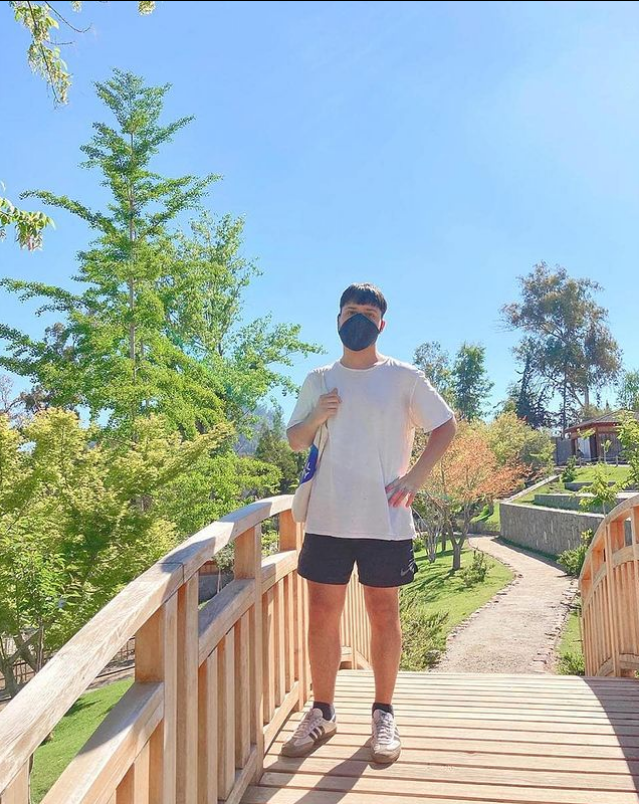

Presentación
Titulado en Producción musical y gestión artística con más de 3 años de experiencia en edición, mezcla y mastering de proyectos musicales. Además de haber formado parte de distintas instancias culturales en pro de la música en vivo. Ademas forma parte del colectivo Casata. Es una plataforma de contenidos relacionados a la industria musical. Tales como entrevistas, sesiones en vivo y tips de producción, además de entregar información enfocada al desarrollo de nuevos artistas emergentes. Los principales canales de exposición son a través de redes sociales (Instagram y Youtube). La web oficial(en construcción) proporcionará un espacio de interacción entre y con los consumidores con el fin de generar interacción y comunidad. Esta plataforma busca satisfacer la demanda de contenido musical en español, dirigido específicamente a músicos emergentes y profesionales ya formados.
